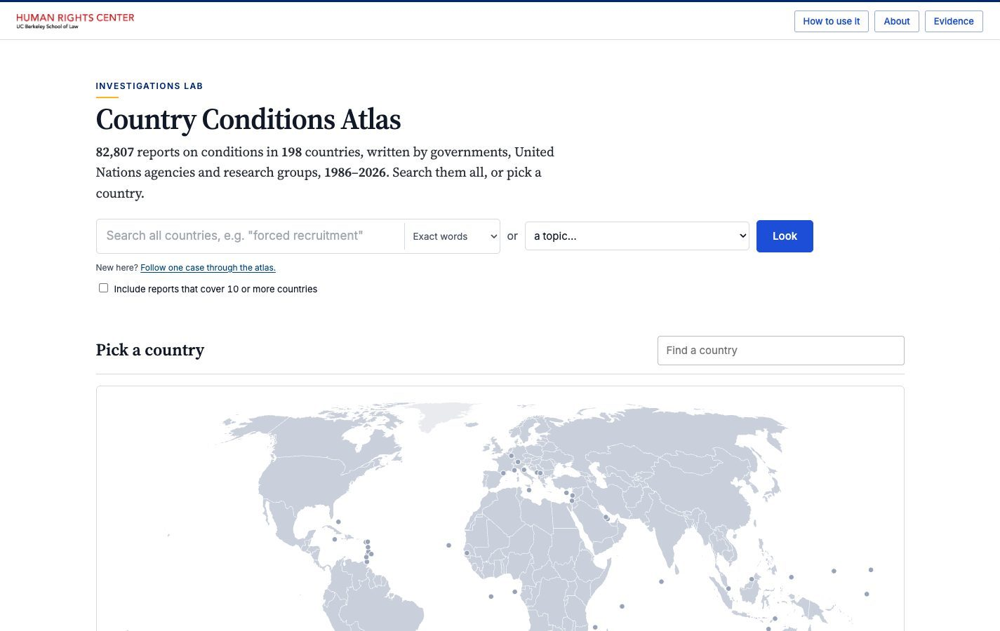
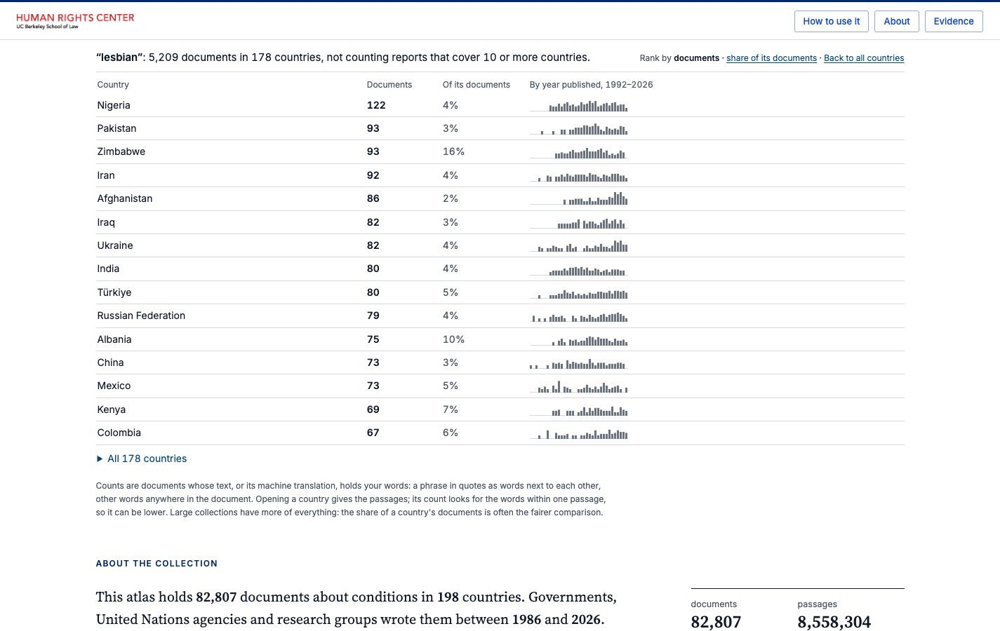
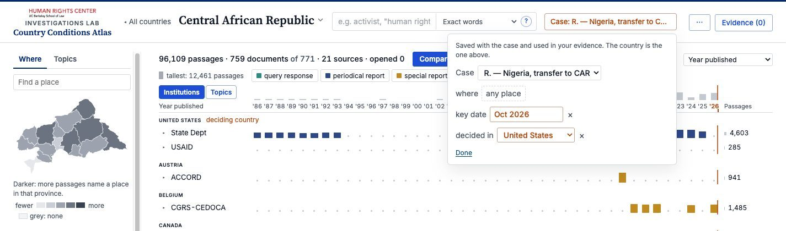
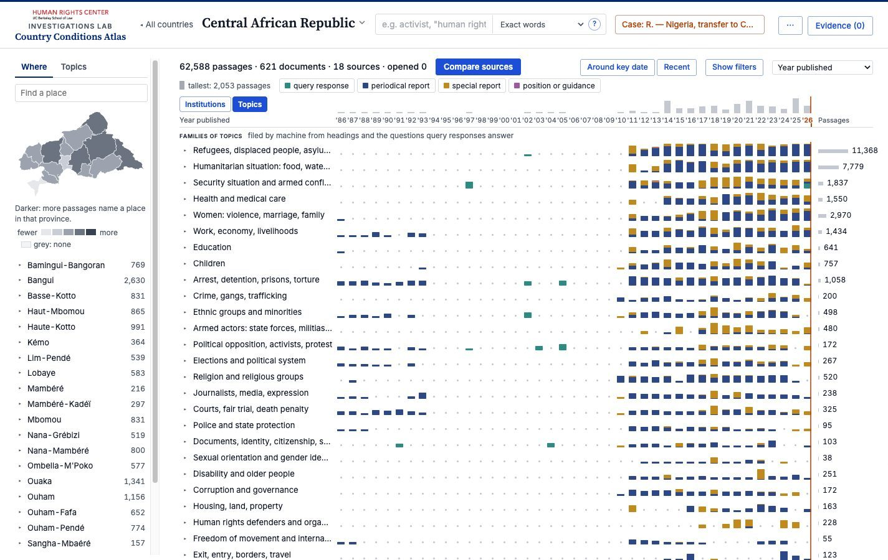
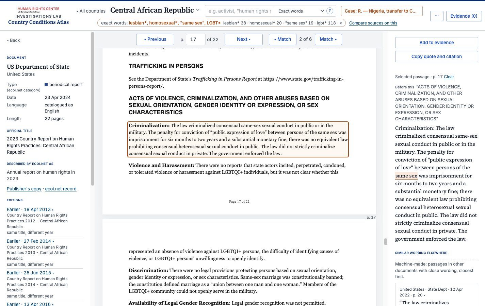

Investigations Lab
How to use the atlas
This guide shows how to use the atlas for one case. The case starts with a search and ends with a Word file of evidence. The client is not a real person. The reports are real. All pictures show the atlas on 18 November 2026.
The client, R., is a woman from Nigeria. She has a relationship with a woman. The government plans to transfer her to the Central African Republic in October 2026. After the transfer, the Central African Republic can send her to Nigeria. An immigration court in the United States will make the decision.
Her lawyer must show that the transfer can put her human rights in danger. The lawyer needs answers to three questions:
- How does the Central African Republic treat lesbian women, in the past and now?
- What other dangers are there for a woman who arrives alone?
- What can happen to her if she is sent on to Nigeria?
The atlas finds the reports and gives quotations with citations. The atlas does not tell you which report is correct. When two reports do not agree, the atlas shows both reports. You must compare them.
Search all countries
Search all countries before you open one country. This shows which countries have reports about the subject, and how many.
1Open the first page
The first page has one search box. The search box examines approximately 83,000 documents about 198 countries. The documents are from 1986 to 2026. You can search for words or select a topic. You can also click a country on the map.

2Search for one word in all countries
Type lesbian. Click Look.
The map is darker where more documents contain the word. The list below the map puts the countries in sequence. A small bar chart shows the years of the documents.


Nigeria has more documents about lesbian women than any other country in the collection. This is important if R. is sent on to Nigeria.
A document is counted if the word is anywhere in it. To find words that are next to each other, put them in quotation marks, for example "blood feud".
3Compare percentages
Click “share of its documents”.
A country with many documents has more matches for all words. To correct for this, rank the countries by the percentage of their documents that contain the word. Countries with fewer than 50 documents go to the bottom of the list. A small number of documents does not show a pattern.

4Search for a topic in all countries
Select “Sexual orientation and gender identity” from the topics. Put the pointer on the Central African Republic.
A topic contains the passages that have a related heading in the report. It also contains passages that a model put in the topic because of their words. Reference lists and tables of contents are not included.

Few reports discuss gay and lesbian people in the Central African Republic. The lawyer can tell the court about this gap. The available reports say that people hide their sexual orientation. Step 12 shows these reports.
5Search by meaning in all countries
In the search box, change “Exact words” to “Similar wording”. Type lesbian women are beaten by their relatives and the police do not protect them.
The atlas finds passages with a meaning that is near to your sentence. These passages can use different words or a different language. The first time, the browser downloads a language model of approximately 135 MB. Your sentence stays on your computer.

A machine finds these matches. It can miss passages, and it can find unrelated passages. Use it to find a pattern. Then read the reports.
Examine the Central African Republic
Open the Central African Republic. Record the facts of the case. Then read what each source said, year by year, to the newest report.
6Open the country
Click the Central African Republic on the map or in the list.
Each row is an institution that wrote about the country. Each mark is a year with a publication. The color shows the type of document. The numbers on the right are counts of passages. The map on the left shows the provinces.

Below the grid, the atlas lists the sources that have no documents about this country. This absence can also be important.
7Open a case
Click Evidence. Type a name for the new case. Add a first point in your own words. Click Case details. Set the key date to Oct 2026. Set the deciding country to United States.
The key date is the date of the transfer. A line on each timeline shows this date. The atlas puts the institutions of the deciding country first in each list.

8Show the topics
Click Topics in the top-left corner of the grid.
The rows are now subjects, for example security, health, women and prisons. The orange line on the right shows the key date.

9Compare the sources
Select the topic “Sexual orientation and gender identity”. Click Compare sources.
For each source, the atlas shows two passages. One passage is nearest to the key date. The other passage is the newest. The passages that are most about the topic are first. Reports about ten or more countries are hidden. To show them, select the checkbox. This prevents worldwide reports from hiding the reports about one small country.

10Search for exact words
Type lesbian*, homosexual*, "same sex", LGBT*. Push Enter.
A star finds all endings of a word. For example, LGBT* finds LGBTI and LGBTQI+. Quotation marks keep a phrase together. A comma between words means “or”. Below the bar, the atlas shows the count for each word. Use these counts to see which words find the most passages.

11Compare two sources side by side
Type criminali* same. Push Enter. Click Compare sources. Select “Side by side” for the State Department and for ReliefWeb. Go to the year 2018.
The atlas shows the two sources year by year. When a source has no passage in a year, the atlas says so. Use this view to find where the sources agree and where they do not agree.

The two sources do not agree. A 2018 report on ReliefWeb says that consensual same-sex relations are not a crime. Each year, the State Department says that the penal code punishes “public expression of love” between persons of the same sex.
The State Department report of 2024 gives more detail. The law punishes same-sex conduct in public and in the military. The report does not say that the law punishes it in private. The lawyer must tell the court about the two statements.
All Survivors Project, published on ReliefWeb, 23 February 2018, page 33. US Department of State, Country Report on Human Rights Practices 2017: Central African Republic, 20 April 2018, page 16. US Department of State, 2023 Country Report on Human Rights Practices: Central African Republic, 23 April 2024, page 17.
12Read the original page
Click the page number on a passage.
The report opens at that page. The page looks the same as the printed report. A box shows the passage. Use the Match buttons to go to each passage that contains your words. The left side shows the earlier editions of the same report. On the right, one button adds the passage to your evidence. Another button copies the passage with its citation.

The newest State Department report gives this information about the country now:
“…maintaining a same-sex relationship was extraordinarily dangerous.”
The same report says that no law protects gay and lesbian people from discrimination. The constitution prohibits same-sex marriage. There were no known organizations that defend their rights.
US Department of State, 2023 Country Report on Human Rights Practices: Central African Republic, 23 April 2024, pages 17 and 18.
The earlier editions give the history. Each report from 2011 to 2024 says that the law punishes “public expression of love” between persons of the same sex. The penalty is six months to two years in prison. Since 2012, the reports say that discrimination by society is “entrenched”.
US Department of State, Country Reports on Human Rights Practices: Central African Republic, editions from 2011 to 2024.
13Read reports in other languages
Many reports are not in English. A machine translated these reports. The atlas searches the original text and the translation. If a passage is long, its card shows only the part that matches, with dots before and after it. Click “Show all” to see the full passage. The atlas always identifies a translation. Click once to see the original text.

14Search by meaning in one country
Select Similar wording. Type women and girls raped by members of armed groups.
R. will arrive alone in a country with armed conflict. The lawyer must know the dangers for women there. Similar wording finds the related passages, also when the reports use different words.

15Find the newest reports
The collection contains reports to autumn 2026. Many of the newest reports about the Central African Republic are in French. UN agencies and European asylum offices wrote them. When you open one of these reports, the atlas shows the French page with a box around the passage. The English translation is next to it.

The report gives figures from the United Nations. Each hour, two persons are victims of violence because of their gender. From January to September 2024, approximately 16,200 cases were recorded. One third of the cases were rapes. Most victims were girls and women.
CGRS-CEDOCA, République centrafricaine (RCA): Situation sécuritaire à Bangui, 21 January 2026, page 26. This text is from the machine translation. Compare it with the French text before you quote it.
Examine Nigeria
The Central African Republic can send R. to Nigeria. Thus the lawyer must also examine the conditions in Nigeria.
16Change the country and keep the case
Click the country name in the bar. Select Nigeria. Search for "same sex marriage".
The case, the key date and the deciding country do not change.

17Read the newest guidance
Search for lesbian*, women. Open the UK Home Office note of June 2025 at page 4.

Nigerian federal law punishes sex between men. In the twelve northern states, sharia law applies to Muslims. Sharia law also punishes sex between women.
“Penalties for ‘lesbianism’ range from death to flogging and imprisonment.”
UK Home Office, Country Policy and Information Note, Nigeria: Sexual orientation, gender identity and expression, and sex characteristics, version 4.0, June 2025, page 4.
18Limit the documents
Click Show filters.
You can show only some languages, some types of institution, or institutions from some countries. You can show only the newest edition of each report. You can hide reports about ten or more countries. Each option shows its number of documents before you select it.

Export the evidence
The Evidence drawer contains all the passages that you saved. The passages are below the points that you wrote.
19Open the evidence
Click Evidence.
The atlas keeps the exact words of each passage. It writes each citation in the format of your court. You can add a note, move a passage to a different point, or open its page again. The evidence stays in this browser.

20Make a Word file
At the bottom of the drawer, you can make a Word file. You can copy a list of sources into a different document. You can save a backup file and give it to a colleague. You can also print the evidence.

Results of the example
| Question | What the reports say | Source and date |
|---|---|---|
| Is a same-sex relationship a crime in the Central African Republic? | The law punishes it in public with six months to two years in prison. The reports do not say that the law punishes it in private. One 2018 report says that it is not a crime. | US State Department, 2011 to 2024. All Survivors Project on ReliefWeb, 2018. |
| How does society treat a lesbian woman? | Discrimination is “entrenched”. A same-sex relationship is “extraordinarily dangerous”. No law protects her. No known organization defends her rights. | US State Department, April 2024 and earlier. |
| Why are there few reports of abuse? | The reports say that people do not identify openly. In the armed conflict, the causes of violence are also difficult to identify. | US State Department, 2023 and 2024. ACCORD, December 2018. |
| What dangers are there for a woman alone? | Armed groups rape women and girls without punishment. In nine months of 2024, approximately 16,200 cases of gender-based violence were recorded. | US State Department, 2018. Belgian asylum office, January 2026. |
| What can happen if she is sent on to Nigeria? | In the twelve northern states, sharia law punishes sex between women. The maximum penalty is death. Federal law prohibits same-sex marriage and gay organizations. | UK Home Office, June 2025. |
Cautions
Quote from the original page, not from a card. Always open the page.
A machine made the translations, the topics and the similar-wording matches. These can be incorrect. Exact-word searches are exact.
If a source has no information on a subject, possibly the source did not examine it. An absence of reports does not show that a person is safe.
The atlas files a report about a region under each country that the report names. Make sure that your passage is about your country.
The atlas contains a selection of the ecoi.net documents, not all of them. For important cases, also search other sources.